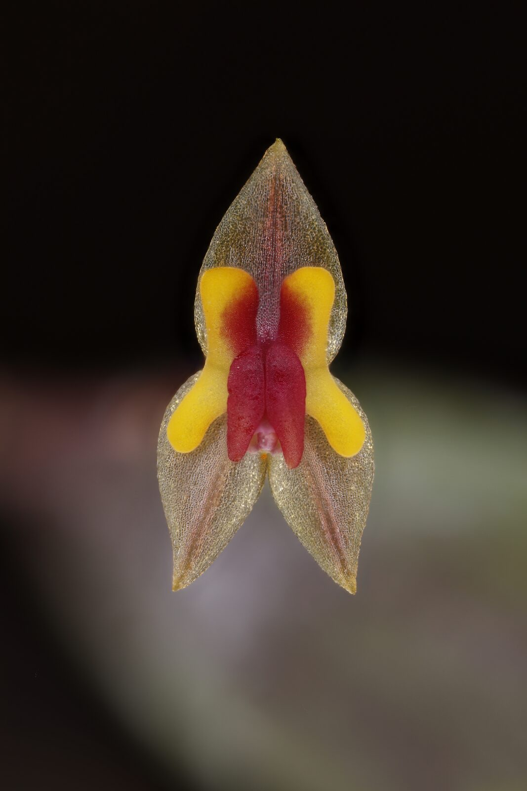

A general page for the miniature, micro-endemic Lepanthes orchids that are becoming one of Orchidarc's most urgent research priorities.

Lepanthes is one of the most species-rich and taxonomically difficult orchid genera in the Neotropics. In Veracruz, its smallest species can hide on mossy trunks, shaded branches and wet ravines, making them easy to miss and easy to lose.
Several Lepanthes from the Cofre de Perote foothills have only recently been described or recognised, and additional populations may represent undescribed taxa. A single species page would be premature until morphology, distribution and genetic boundaries are clarified.
Our immediate questions are practical and taxonomic: how many populations exist, whether isolated sites represent the same species or different species, how narrow each Area of Occupancy is, and what microhabitats allow them to persist inside fragmented cloud forest.
These orchids are among the most urgent cases in the Orchidarc landscape. Some populations may number only in the hundreds and may be restricted to one ravine or forest fragment. For such species, a single clearing event, fire or land-use decision can remove a large proportion of the global population.
Fieldwork will combine careful visual surveys, macro photography, GPS mapping, host-tree notes, microhabitat description and leaf-tissue sampling preserved in silica gel. Genetic analysis will help clarify whether geographically isolated populations are conspecific or distinct.
The Lepanthes programme links the Herbarium and Research sections of this site. It is a conservation problem, a taxonomic problem and a field-documentation challenge requiring macro imaging, repeated visits and cautious handling of sensitive locality data.